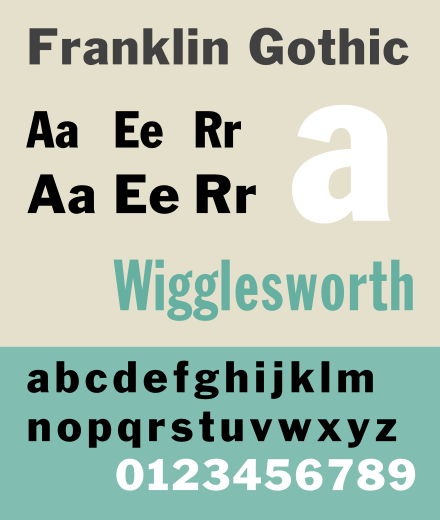

The Franklin Gothic font was created by Morris Fuller Benton in the early 1900’s to get the attention of the ATF
(American Type Founders) . It was originally made to be a substitute for the sans-serif font but now
is used for multiple other purposes. Victor Caruso created four versions of the font around
1979-1980 being medium, book, demi, and heavy in roman and italic. Nowadays it is used as subtitles
for media use such as commercials, billboards and movies. It is also used for school use as noted in a
few sources. This font was designed to be more unique and smaller to add contrast to the sans-serif font.

"The quick brown fox jumps over the lazy dog"